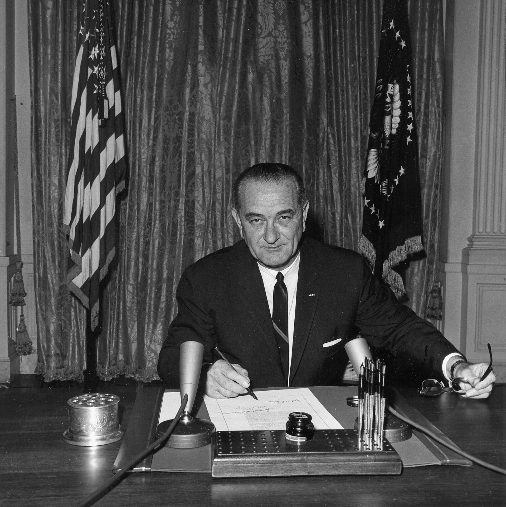
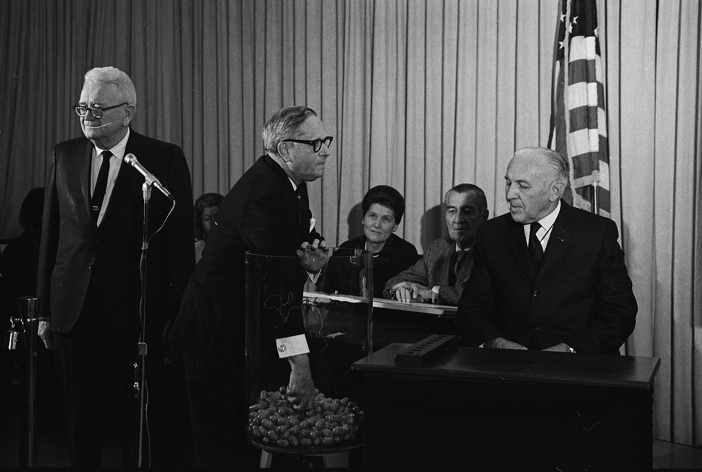

Directions: Work through the five stations in order. Each station holds one record from the war. For each record, work out three entries for the ledger: the commitment the step added, the reason given for it at the time, and the cost the step carried. You will build the full ledger in Part 2 and judge the whole sequence from it.
Source: Gulf of Tonkin Resolution, passed by Congress on August 7, 1964 and approved August 10, 1964. Text quoted verbatim from the audited TPSP record gulf-of-tonkin-resolution-1964; the edition named in that record is U.S. Congress, "Gulf of Tonkin Resolution (H.J. Res. 1145)," 1964 (Public Law 88-408; Wikisource). Cuts are marked with ellipses. The photograph shows President Johnson signing the resolution in the East Room on August 10, 1964. Photograph by Cecil W. Stoughton, National Archives record 192484.

"Whereas the United States is assisting the peoples of southeast Asia to protect their freedom and has no territorial, military or political ambitions in that area, but desires only that these peoples should be left in peace to work out their own destinies in their own way . . ."
". . . Congress approves and supports the determination of the President, as Commander in Chief, to take all necessary measures to repel any armed attack against the forces of the United States and to prevent further aggression."
"The United States is, therefore, prepared, as the President determines, to take all necessary steps, including the use of armed force, to assist any member or protocol state of the Southeast Asia Collective Defense Treaty requesting assistance in defense of its freedom."
"This resolution shall expire when the President shall determine that the peace and security of the area is reasonably assured . . . except that it may be terminated earlier by concurrent resolution of the Congress."
Ledger entries. What commitment did this step add, stated in the resolution's own terms? Name who decides how far the commitment runs, and who decides when it ends.
What reason does the resolution give for the commitment? Quote the phrase that carries the reason, and note what the passage claims about American ambitions in the area.
Source: Draft memorandum from McGeorge Bundy, the president's national security adviser, to President Johnson, May 25, 1964. Text quoted verbatim from the audited TPSP record bundy-memorandum-vietnam-1964; the edition named in that record is McGeorge Bundy, "Draft Memorandum to the President," May 25, 1964 (Foreign Relations of the United States, 1964-1968, Vol. I, Document 173). Cuts are marked with ellipses. The memorandum was written more than two months before the Gulf of Tonkin reports.
"It is our current estimate that the actions which follow should be taken in the order in which they are listed. . . . Finally, it must be remembered that the enemy has choices, too, and that this sequence might therefore be truncated or drastically modified by the actions of others."
Step 2, on communicating with Hanoi: "We intend that Communism shall not take over Southeast Asia, but we do not intend or desire the destruction of the Hanoi regime."
Step 7: "The first deployments toward Southeast Asia of U.S. and, hopefully, allied forces. It is our recommendation that these deployments be on a very large scale, from the beginning, so as to maximize their deterrent impact and their menace."
Step 8: "(8) A Congressional Resolution. We agree that no such resolution should be sought until Civil Rights is off the Senate calendar . . ."
Step 10: "(10) Initial strike against the north. This would be very carefully designed to have more deterrent than destructive impact, as far as possible."
Ledger entries. What commitment was being planned at this step, and at what point in the ten step sequence does a congressional resolution appear? What does its place in the sequence show about how the resolution at Station 1 came to be passed?
What limits does the memorandum itself state? Name the limit stated for the war's aim in step 2 and the warning the opening paragraph gives about the plan's own sequence.
Source: Summary prepared for this lesson from the United States Army record of the offensive. This station is a summary, not a transcription of one document. The photograph shows a deserted street in Saigon during the fighting. Photograph by SP5 James Newlin, United States Army, February 1, 1968, National Archives record 111-CCV-529-CC45843.
On the night of January 30 and 31, 1968, at the start of Tet, the Vietnamese new year holiday, North Vietnamese and Viet Cong forces attacked across South Vietnam at the same hour. They struck more than one hundred cities, towns, and bases. A Viet Cong squad breached the wall of the American embassy compound in Saigon and held part of the grounds for about six hours. In Hue the attackers seized most of the city and held it for about twenty five days of house to house fighting. American and South Vietnamese forces drove the attackers out everywhere, and attacker losses were very heavy. The Viet Cong, who had carried much of the attack, never recovered their former strength. In the United States the offensive landed on a public that had been told through the autumn of 1967 that the enemy was weakening and progress was steady. On March 31 President Johnson limited the bombing of North Vietnam and announced that he would not seek reelection.
Ledger entries. This step added no new American commitment. Enter instead what the step changed: what did the offensive cost the attackers, and what did it cost the administration that had described the war's progress?
The offensive was a military defeat for the side that launched it. Explain, from the station text, how a defeat produced a strategic gain, and name the evidence in the text that carries your explanation.
Source: President Richard M. Nixon, "Address to the Nation on the War in Vietnam," November 3, 1969 (Public Papers of the Presidents). Text quoted from the delivered address. Cuts are marked with ellipses.
"The defense of freedom is everybody's business, not just America's business. And it is particularly the responsibility of the people whose freedom is threatened. In the previous administration, we Americanized the war in Vietnam. In this administration, we are Vietnamizing the search for peace."
"The Vietnamization plan was launched following Secretary Laird's visit to Vietnam in March. Under the plan, I ordered first a substantial increase in the training and equipment of South Vietnamese forces. . . . Under the new orders, the primary mission of our troops is to enable the South Vietnamese forces to assume the full responsibility for the security of South Vietnam."
Ledger entries. What commitment did this step remove, and what commitment did it keep or add in the same passage? Answer from the quotations, naming the training and equipment order and the new mission given to American troops.
What reason does the address give for the change? Quote the sentence that carries the reason, and say whether the passage presents Vietnamization as a change of aim or a change of who carries the fighting.
Source: Proclamation 3945, "Random Selection for Military Service," issued by President Nixon on November 26, 1969 (83 Stat. 972), and the Selective Service System record of the drawing held on December 1, 1969. The proclamation passage is quoted from the Statutes at Large text. The photograph shows Representative Alexander Pirnie drawing the first capsule at the drawing. Photograph credited to the Selective Service System.

"NOW, THEREFORE, I, RICHARD NIXON, President of the United States of America . . . having determined that a method of random selection will provide the most equitable basis for selection of registrants for military training and service, do hereby proclaim the following: That a random selection sequence will be established by a drawing to be conducted in Washington, D.C., on December 1, 1969, and will be applied nationwide. The random selection method will use 366 days to represent the birthdays (month and day only) of all registrants who, prior to January 1, 1970, shall have attained their nineteenth year of age but not their twenty-sixth."
The drawing record: 366 capsules, one for each birth date including February 29, were drawn in order before television cameras. The first date drawn, by Representative Alexander Pirnie, was September 14. Every man born on September 14 in the years 1944 through 1950 received sequence number 1 and stood first in line for induction in 1970. The last numbers drawn were, in practice, never called.
Ledger entries. What did this step change about the war's cost at home, and for whom? Name who bore the draft's burden before the lottery, from the reading, and state what the lottery put in place of local board decisions.
What reason does the proclamation give for random selection? Quote the phrase that carries it, and explain in one sentence what problem the phrase says the lottery solves.
Complete the ledger from your station work. Then answer the verdict question in a paragraph, defending your judgment from the ledger and the documents.
| Step | Commitment added | Reason given | Cost |
|---|---|---|---|
| 1. The Tonkin Resolution, 1964 | |||
| 2. The Bundy plan, 1964 | |||
| 3. Tet, 1968 | |||
| 4. Vietnamization, 1969 | |||
| 5. The draft lottery, 1969 |
The verdict. At which step in the ledger could the war still have been ended on better terms than the terms of 1973 and 1975? Name the step, state the terms that were still available at that point, and defend the judgment from at least two documents in the file.
What commitment did the step add, and who decides its reach and its end? The commitment is open ended authority. Congress approved the president's determination to take all necessary measures to repel attacks and prevent further aggression, and to take all necessary steps, including armed force, to assist treaty states asking for help. The president decides how far it runs, in the phrase as the President determines. The president also decides when it ends, since the resolution expires when the president determines the area's peace and security are reasonably assured, unless Congress ends it first by concurrent resolution.
What reason does the resolution give? The stated reason is defense of freedom under attack. The preamble's claim is that the United States is assisting the peoples of Southeast Asia to protect their freedom and has no territorial, military or political ambitions in that area, desiring only that these peoples be left in peace to work out their own destinies. Credit requires the quoted ambitions denial, because the gap between that claim and the war that followed is the ledger's first entry.
What was planned, and where does the resolution stand in the sequence? A graduated widening of the war, planned in ten ordered steps two months before the Tonkin reports: communications with Hanoi, allied consultations, large deployments, a congressional resolution at step eight, expanded deployments, and an initial strike against the north at step ten. Its place in the sequence shows the resolution was an instrument prepared in advance, waiting for a politically workable occasion, not a response improvised after an attack.
What limits does the memorandum state? Two. The aim is limited: Communism shall not take over Southeast Asia, but the United States does not intend or desire the destruction of the Hanoi regime. And the plan warns against itself: the enemy has choices too, and the sequence might be truncated or drastically modified by the actions of others. Students should note that the war later broke both limits in practice, widening past the stated aim's means and being reshaped by the enemy's choices at Tet.
What did the step change, and what did it cost each side? The attackers paid in losses: driven out everywhere, very heavy casualties, and a Viet Cong that never recovered its former strength. The administration paid in belief: a public told the enemy was weakening watched attacks in more than one hundred places and on the embassy grounds, and the president who had widened the war limited the bombing and left the 1968 election within two months.
How did a defeat produce a strategic gain? The offensive's target turned out to be American confidence rather than ground. Because official claims through the autumn of 1967 had promised steady progress, the scale of the attacks refuted the claims in public, and the refutation, not the battlefield result, moved American politics. Evidence in the text: the embassy breach, the hundred places struck, and the March 31 decisions that followed.
What did the step remove, and what did it keep or add? It removed the American ground burden by stages: the primary mission of American troops became enabling South Vietnamese forces to assume full responsibility for the security of South Vietnam. It kept and increased the material commitment: a substantial increase in the training and equipment of South Vietnamese forces, ordered under the plan. The aim, an independent non-Communist South Vietnam, did not change.
What reason does the address give? The reason is responsibility: the defense of freedom is everybody's business, not just America's business, and it is particularly the responsibility of the people whose freedom is threatened. The passage presents Vietnamization as a change of who carries the fighting, not a change of aim, in its own contrast: the previous administration Americanized the war, and this one is Vietnamizing the search for peace.
What did the step change about the cost at home, and for whom? Before the lottery, local boards chose among registrants, and the draft's calls fell hardest on the poor and the young, on men without deferments or influence over their boards. The lottery put televised chance in place of board discretion: one drawing fixed the order for every man in the covered years by birth date, so a low number meant near certain induction and a high number meant safety, decided openly on December 1, 1969.
What reason does the proclamation give? Equity, in the phrase that a method of random selection will provide the most equitable basis for selection of registrants. The phrase answers the charge that the old system selected by advantage: random order treats every birth date alike, which is the fairness the proclamation claims for it.
| Step | Commitment added | Reason given | Cost |
|---|---|---|---|
| 1. The Tonkin Resolution, 1964 | Presidential authority to take all necessary measures and steps, including armed force, across Southeast Asia, with no declaration of war. | Reported attacks on American ships and defense of the freedom of Southeast Asian peoples, with American ambitions in the area expressly denied. | Congress's war power, handed to the president on the August 2 attack and a second attack that almost certainly never happened. |
| 2. The Bundy plan, 1964 | A ten step sequence toward wider war, planned in May 1964, ending in an initial strike against the north. | Preventing a Communist takeover of Southeast Asia while expressly not seeking the Hanoi regime's destruction. | The decision was made by sequence before the public occasion for it existed, narrowing every later choice. |
| 3. Tet, 1968 | No new commitment. The step subtracted the administration's credibility and the president himself. | The attackers sought a general uprising and a collapse of the Saigon government; neither came. | Attacker losses were very heavy and the Viet Cong never recovered. American belief in official progress claims did not recover either. |
| 4. Vietnamization, 1969 | American ground responsibility withdrawn by stages; training and equipment for South Vietnamese forces substantially increased. | The defense of freedom is particularly the responsibility of the people whose freedom is threatened. | The war continued for years under new management, widened into Cambodia and Laos, and ended on the same question it began with. |
| 5. The draft lottery, 1969 | A single national drawing fixing the induction order for men born from 1944 through 1950 by birth date. | Random selection as the most equitable basis for selection, replacing local board discretion. | The burden was redistributed, not lifted: low numbers faced induction, and every young man in the covered years learned his standing in one evening. |
Verdict grading guide. Judgments may land at different steps and earn full credit when defended from two documents. The strongest cases are usually made for the period before the resolution hardened into a ground war, when the Bundy sequence was still a plan and its own stated limit, no destruction of the Hanoi regime and no takeover prevented at open ended cost, could still have been negotiated from; or for the months after Tet, when the attackers were at their weakest and the administration knew its own claims had failed. A verdict placed at the lottery or at Vietnamization must explain what better terms were still available once the ground war had run for years, and most such answers earn partial credit. Any verdict that ignores the second Tonkin attack's status, or that treats the resolution as a declaration of war, has misread Station 1.